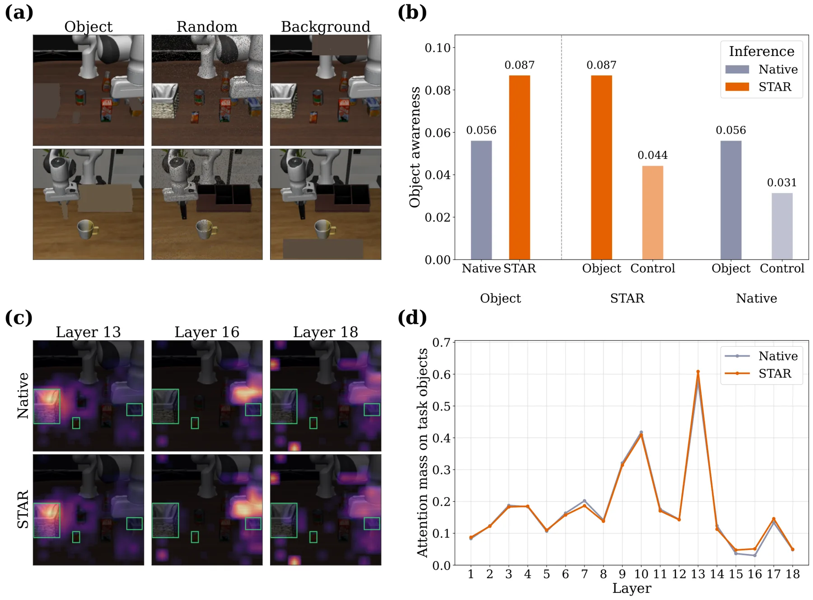
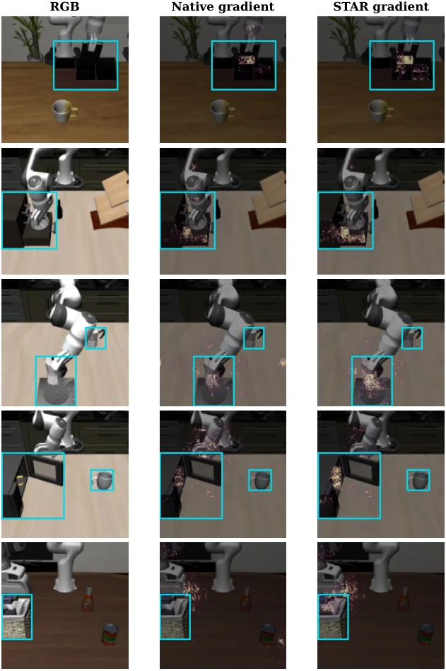

STAR：用本体感觉在推理时操控 VLA 的动作表征
STAR: Steering Action Representations during Inference
不改权重、不改架构，只在后 1/3 Transformer 层对残差更新做 EMA，并用末端执行器方向连续性、速度、jerk、旋转变化调节 β。SimplerEnv 上 GR00T-N1.5 41.0→46.3、OpenVLA 30.3→36.0；LIBERO-PRO 上 π0.5 48.2→50.1；真机梨到碗 42.5→47.5（17/40→19/40）。
average success gain
average success gain
reported average gain
added latency
作者、单位与技术谱系 · Research context
作者与单位
研究脉络
- DAMO（2025）激活动量去幻觉方法基座关系：DAMO 在 VLM 解码时累积 activation momentum；STAR 把同类“测试时控制隐状态”思路搬到动作表征，并加入本体感觉调制。[论文 §2.3]
- π0.5 / GR00T-N1.5 / OpenVLA方法上游关系：三个冻结 VLA 主干是 STAR 的直接作用对象，方法不改权重与架构。[论文 §4.1]
- 本篇推进本篇推进关系：用 object awareness 探针定位后层 grounding 缺口，再用残差 EMA 补。[论文 §1 / §3.2]
作者单位来自 HTML 首页的逐人标注；产业与学术单位的边只写共同署名，不推断项目合作或师生关系。
方法本质拆解 · What actually changed
是不是微调？
完全不是。所有 VLA 权重冻结，STAR 只在推理时对后层残差更新做 EMA 混合；没有新数据、没有新损失、没有架构改动。真机实验也只加载同一个微调 checkpoint，前后只差 STAR 开/关。
有没有额外约束？
没有训练约束。推理时的“约束”是混合系数 β_t 被限制在 [0.25,0.55]，并且只作用于最后 1/3 层；β_t 由四个因果本体感觉量的稳健标准化分数经 sigmoid 决定，不使用未来状态或任务真值。
推理/后端到底做了什么？
单次前向里，前 2/3 层照常计算；后 1/3 层把每层残差更新先与跨层动量做 EMA，再加到 hidden state，最后照常送动作头。没有额外前向、没有候选采样、没有搜索；因此延迟只增加约 3.3%。
方法本质是什么？
本质是“把前层已经形成的物体感知更新方向，用动量延续到后层动作表征”，并用执行动态决定延续多强。它改变的是后层残差流，不是 attention 图或权重；没有做的是重新训练 grounding，也没有显式几何约束。
输入（VLA 中间层残差 + 近期本体感觉）→ 在后 1/3 层对残差更新做本体感觉调制的 EMA → 后层动作表征继承前层物体感知方向 → 冻结模型上提升成功率。

桥接价值Bridge
桥接价值
具身策略的“视觉 grounding”通常靠加数据、加重建损失或改注意力来修，代价是训练。STAR 证明只在推理时改后层残差流也能拿到稳定增益，而且干预位置可以先用“遮物体”探针定位。对我们的价值是提供了一种低成本的诊断加干预范式：先用受控遮挡看表征在哪一层丢失信息，再只改那一层的信息流。
方法与模块Method
方法摘要
把 VLA 的 Transformer 层按相对深度 ρ=2/3 分成前段与混合段。混合段每个 block 的残差更新 Δh_t^k 不直接加到 hidden state，而是先维护动量 m_t^k=β_t m_t^{k-1}+(1−β_t)Δh_t^k，再用 h_t^k=h_t^{k-1}+m_t^k 前传，使前层形成的物体感知方向延续到后层。β_t 由四个因果本体感觉量决定：末端方向连续性 c_t、位移尺度 v_t、jerk j_t、旋转变化 ω_t；每个量用滑动窗标准化，加权成 r_t，再用 median/IQR 稳健归一化，经 sigmoid 映射到 [0.25,0.55]。
可迁移模块
第一是“遮目标物体”的 object awareness 分数：用 ‖h_m−h_o‖/‖h_o‖ 逐层量化视觉证据保留程度，可以直接搬到我们自己的融合表征上，检查 IMU/GNSS 证据在哪一层被丢掉。第二是只改残差流、不改 attention 的干预方式，便于在冻结模型上做 A/B。第三是用本体感觉做门控的思路：把“执行动态是否剧烈”作为干预强度的条件，比固定系数更稳。

证据Evidence
关键证据与数字
Table 1（SimplerEnv）：GR00T-N1.5 平均 41.0→46.3（+5.3），OpenVLA 30.3→36.0（+5.7）。Table 2（LIBERO-PRO）：GR00T-N1.5 40.3→43.2，π0.5 48.2→50.1；π0.5 的 task split 6.8→18.8，但 lan 92.8→92.6、swap 9.2→7.2、env 65.8→65.0 略降。Table 3–5（OpenVLA，SimplerEnv）：去掉全部本体感觉 27.8，完整 36.0；固定 β 最高只有 31.6；ρ=2/3 的 36.0 高于 ρ=0 的 25.7、ρ=1/3 的 27.6、native 的 30.3。Table 6：真机 40 次试验 17/40→19/40（42.5→47.5%），RTX 3090 上额外延迟 3.3%。
边界与下一步Limits & Next Step
边界与风险
方法要求能读中间层 hidden state，黑盒 API 直接用不了；本体感觉门控是为单末端执行器操作设计的，多臂/移动底盘未验证。作者明确说“后层物体感知衰减”只在所测模型上观察到，不是所有 VLA 都成立；若某模型没有这个现象，STAR 可能无益。实验上，LIBERO-PRO 的多个 split 下降、真机只有 40 次试验、增益 2/40 也在噪声范围内，因此“稳定 +4 点”需要更多种子与任务支撑。
下一步实验
第一步在我们的策略上复现逐层 object awareness 曲线，确认衰减层是否与动作头距离相关，再决定干预位置。第二步把本体感觉换成融合定位的输出（速度、角速度、协方差），看它能否作为“何时该保守”的门控。第三步做更强的对照：随机 β、固定 β、错位本体感觉三组，确认增益不是来自“任何后层扰动”。

